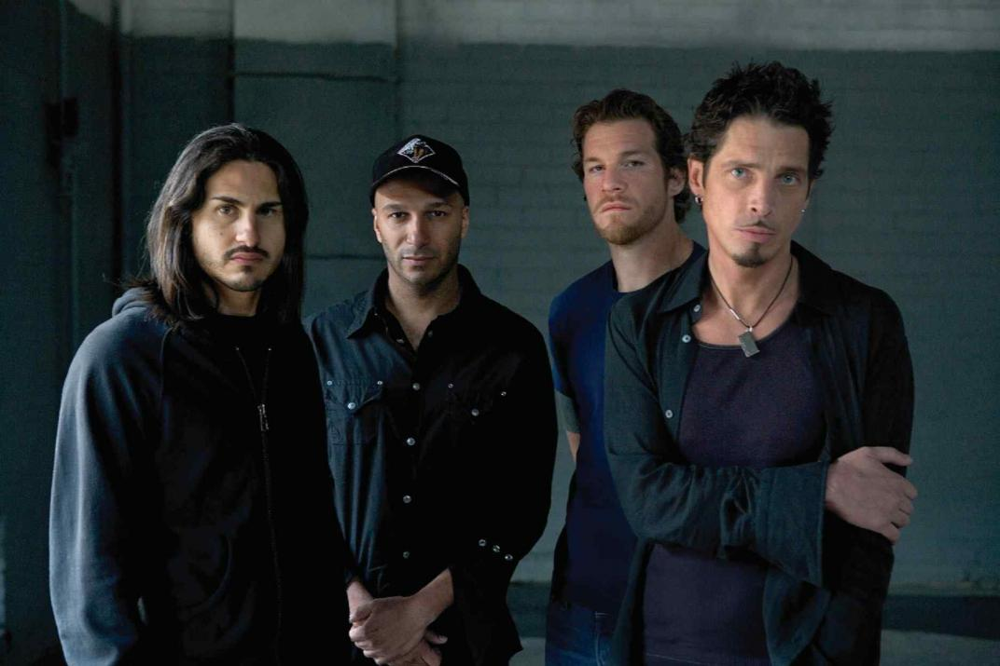

Audioslave
Grupo estadounidense de rock alternativo formado en Los Ángeles, California, en 2001.

Integrantes del grupo
Chris Cornell
Tim Commerford
Tom Morello
Brad Wilk
Discografia
Año
Disco
2002
Audioslave
2005
Out of Exile
2006
Revelations
"Audioslave" fue su álbum más exitoso.
Sitio Web Oficial
www.audioslave.com